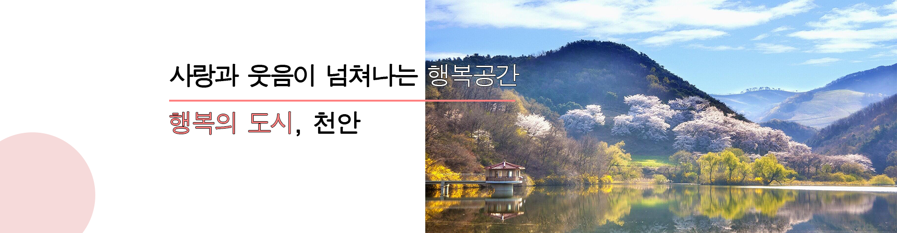
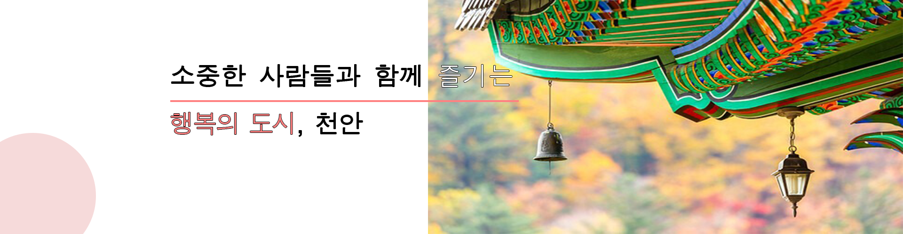
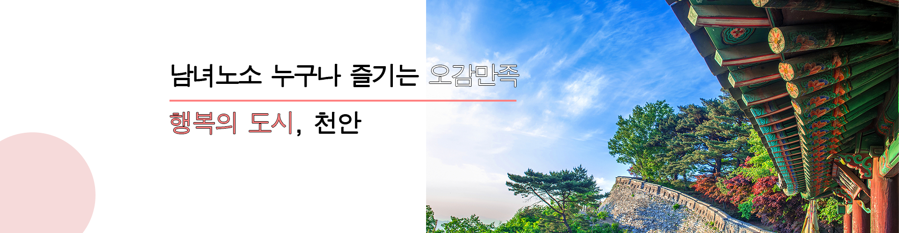
천안명소 영역
모든 사람들이
하하호호 자신의 행복을
실현시키는 도시
고품격 문화도시
문화적 감성과 예술적 상상력을 마음껏 피우고 자연의 여유를 느낄 수 있도록 여가와 쉼을 불어 넣겠습니다.
활기찬 경기도시
온 세상을 환히 비추는 태양이 떠오르듯 천안의 밝은 미래를 위해 역동적인 지역이 되겠습니다.
행복한 복지도시
누군가의 일부분이 아니라, 우리 모두의 생애 전체를 촘촘하며 안전하고 든든한 울타리를 만들어 따뜻함이 있습니다.
친환경 그린도시
우리들의 반복되는 지루한 일상 속에서 한 조각, 여유 한모금, 기쁨 한 움큼을 누릴 수 있도록 일상 곳곳에 행복감이 스며듭니다
연인과함께
가족과함께
친구와함께
역사여행

천안명소 영역
아름다운 천안의 봄여름가을겨울
봄

"거래의 얼"과 "한국의 빛"이 살아있는 뜨거운 역사의 현장

학생, 청소년 등 하루 7만여명이 찾는 젊음의 복합 문화광장
여름

유관순열사의 정신을 후세에 길이 전하기 위하여 설립된 유관순열사사적지

업성동의 '성', 성성동의 '성'을 따서 합쳐 만든 업성저수지
가을

우리나라 삼남대로의 분기점

유관순열사의 정신을 후세에 길이 전하기 위하여 설립된 유관순열사사적지
겨울

천안의 진산이라는 태조산에 자리 잡은 남북통일 염원 사찰

유관순열사의 정신을 후세에 길이 전하기 위하여 설립된 유관순열사사적지
여행리포트
모두가 행복한
천안에서의 웃음나는
후기를 만나보세요
#가족여행
#또 방문
#아이와 함께

어린이농촌체험교실
날짜 : 2023-03-10
어린이 농촌체험교실은 어린이들에게 자연과 농촌의 삶을 경험하고 배우는 기회를 제공하여, 지속가능한 미래를 위한 인식과 교육의 기반을 마련하는 것에
중요성이 있습니다.

홍대용과학관에서 우주여행 떠나볼까요?
날짜 : 2023-04-10
비오는 주말 천안 실내 가볼만한 곳을 찾아 홍대용과학관을 다녀왔습니다. 주차장도 넓고 주말인데도 많이 붐비지 않아 편안하게 관람하고 체험할 수
있었습니다.

시립미술관 전시전
날짜 : 2023-04-11
람의 감정이라는 것은 복잡하고 미묘한 특징이 있다. 무언가를 그리워하는 것도 사랑하는 것도 기뻐하는 것의 반대편의 다른 감정이 있다.
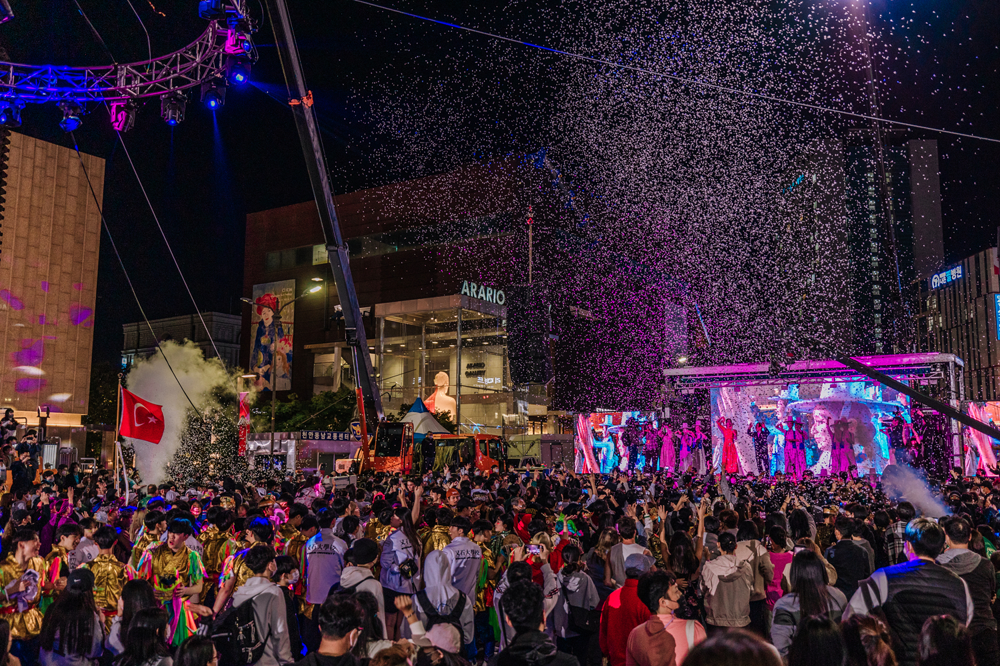
천안흥타령춤축제2023, 거리퍼레이드 현장속으로
날짜 : 2023-05-01
천안흥타령춤축제2023의 하이라이트는 뭐니뭐니해도 거리퍼레이드!!7시부터 방죽안 오거리부터 터미널 사거리까지 진행되었습니다.
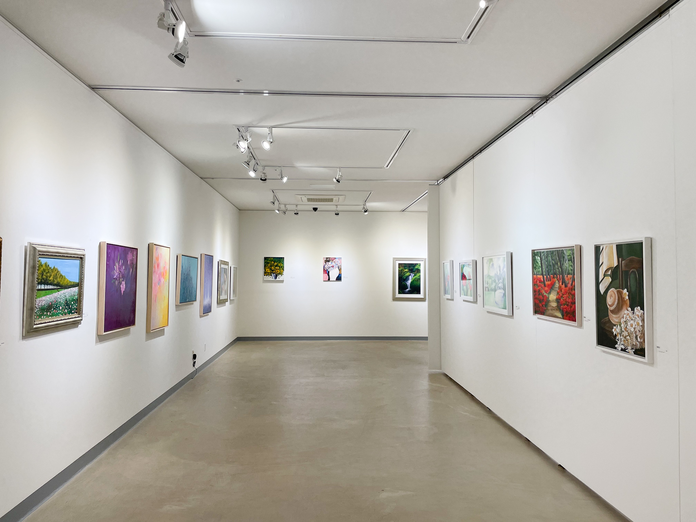
삼거리갤러리 놀러오세요~!
날짜 : 2023-06-10
꽃이 피고 들판이 초록으로 물들어 주말마다 바삐 나들이를 다니느라 마음은 힐링이지만 어느순간 조금은 더 여유로운 시간을 보내고 싶은 마음이 스멀스멀
피어오르는 지금.

천안 흑성산의 아침 풍경
날짜 : 2023-06-11
시원한 동풍이 불어오는 새벽 폭염에 시달리던 지친 몸을 이끌고 시원한 가을바람이 불어오는 흑성산 전망대에 올랐습니다.
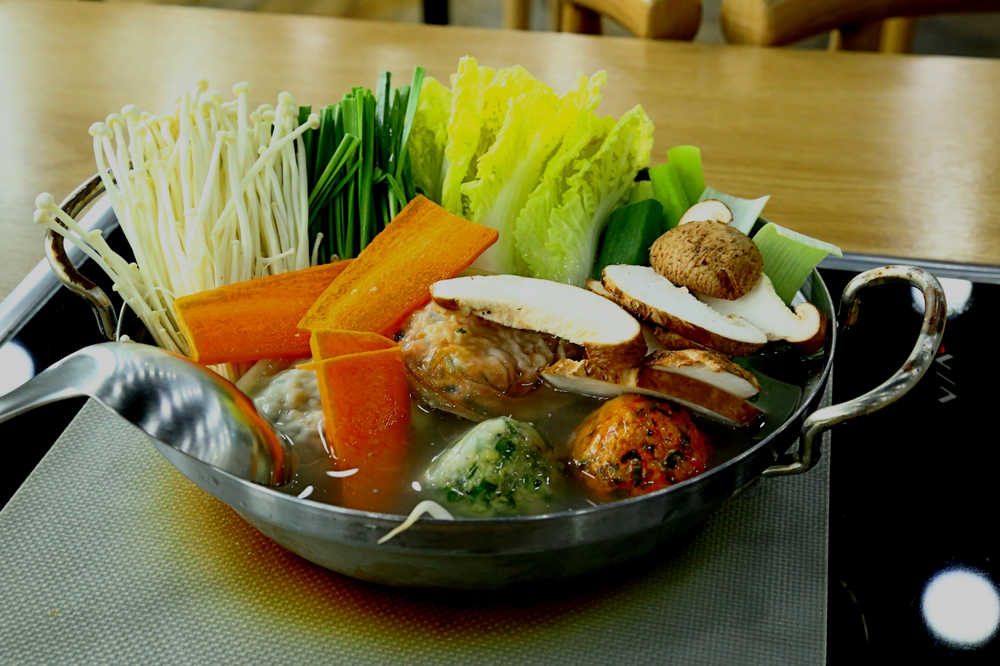
만두전문점 천안 성거 맛집
날짜: 2023-02-11
보다 좋은 식재료로 모든 음식을 정성껏 직접 조리하여 제공하고 있어서 같은 가격에 더 질높은 메뉴를 즐길수 있다.
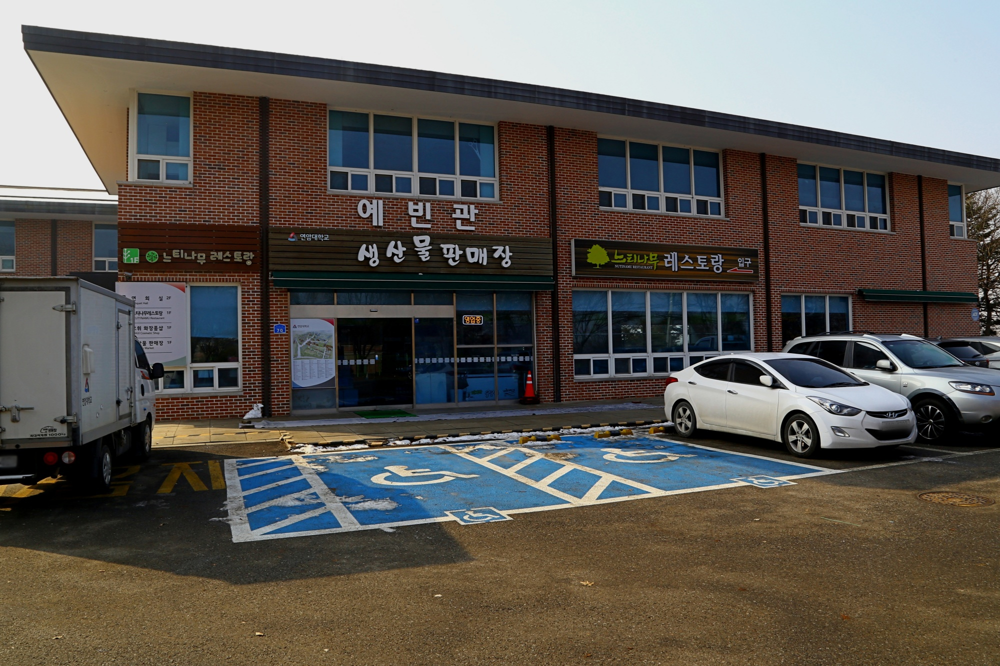
생산물판매장
날짜: 2023-03-11
내부 구성원과 외부 방문객을 위해 마련된 공간으로 연암대에서 생산된 농산물을 판매하는 생산물판매장
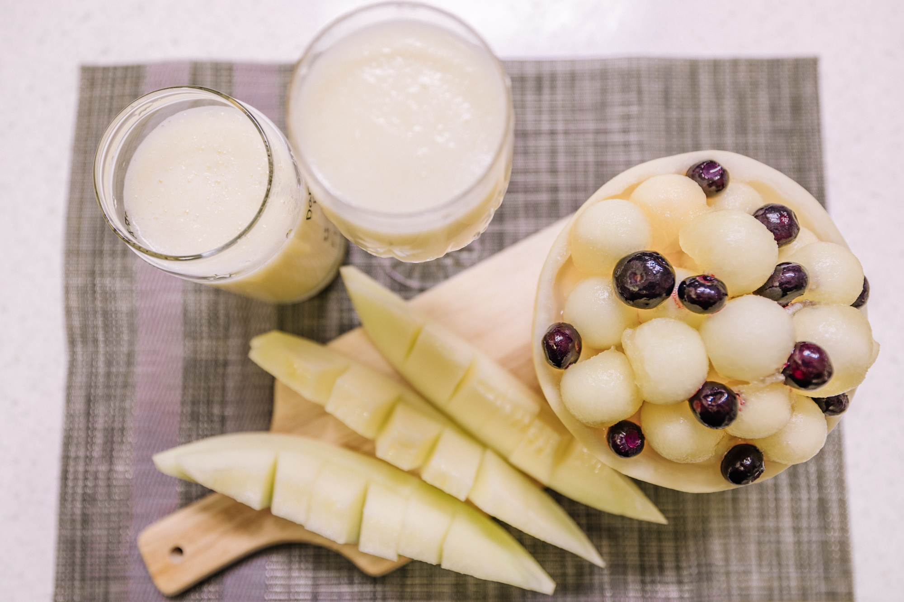
수신멜론 제철맞아 맛나요!
날짜: 2023-04-11
은은하고 달달한 향과 부드러운 식감을 자랑하는 수신멜론의 품종은 백설멜론(홈런스타)과 노랑멜론(넘버원)이 있습니다.
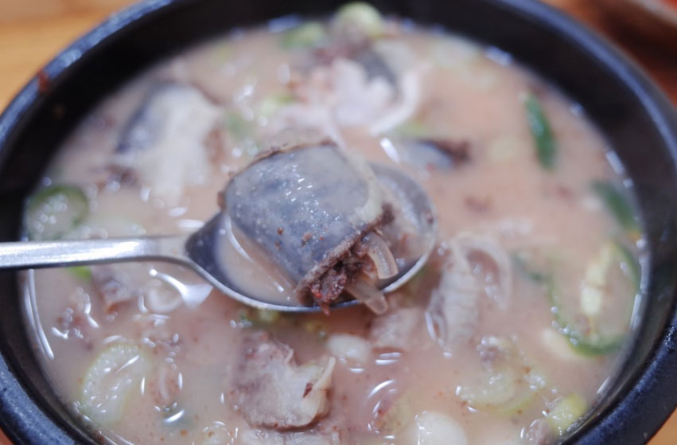
순대국밥 한 그릇
날짜: 2023-05-11
병천은 충북 진천, 청주에서 천안삼거리를 거쳐 서울로 올라가는 길목에 자리 잡고 있어 예부터 길손들의 발길이 끊이지 않던 곳이었습니다.
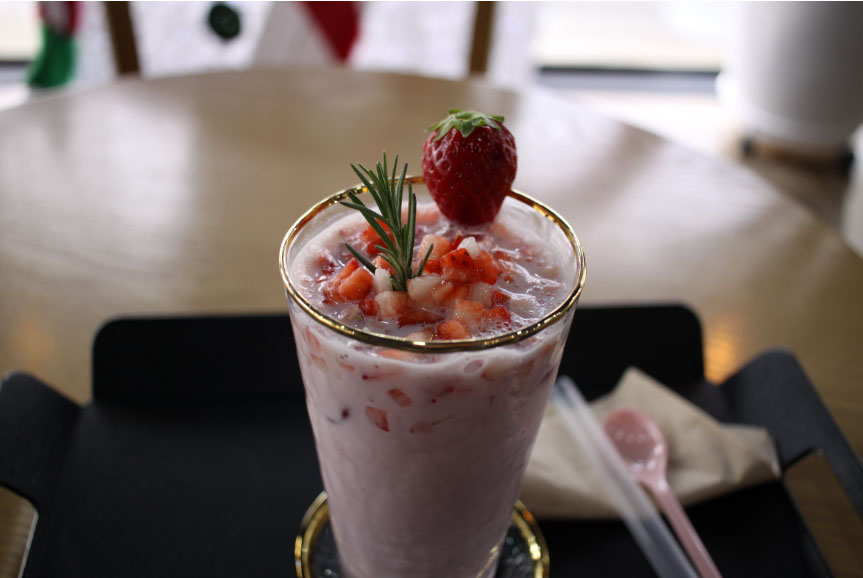
아침처럼 먹어본 리얼딸기라떼
날짜: 2023-06-11
예쁜 카페가 많은 곳으로 카페탐방만 하더라도 한달이 훌쩍 지나갈 정도로 예쁜 집들이 많이 있는데요. 천안에서 하루를 묵고 돌아다니다가 분위기 좋은 카페를 보고 안으로 들어가 보았습니다.
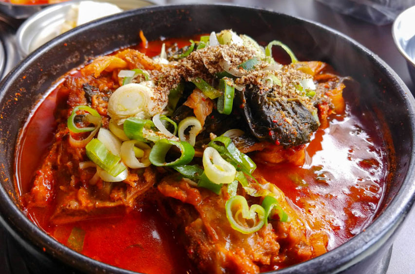
이열치열! 이베리코 등뼈로 만든 해장국
날짜: 2023-07-11
아삭한 양파의 식감에 달큰하면서 새콤한 양념이 어우러져 입맛을 복돋아 줍니다.
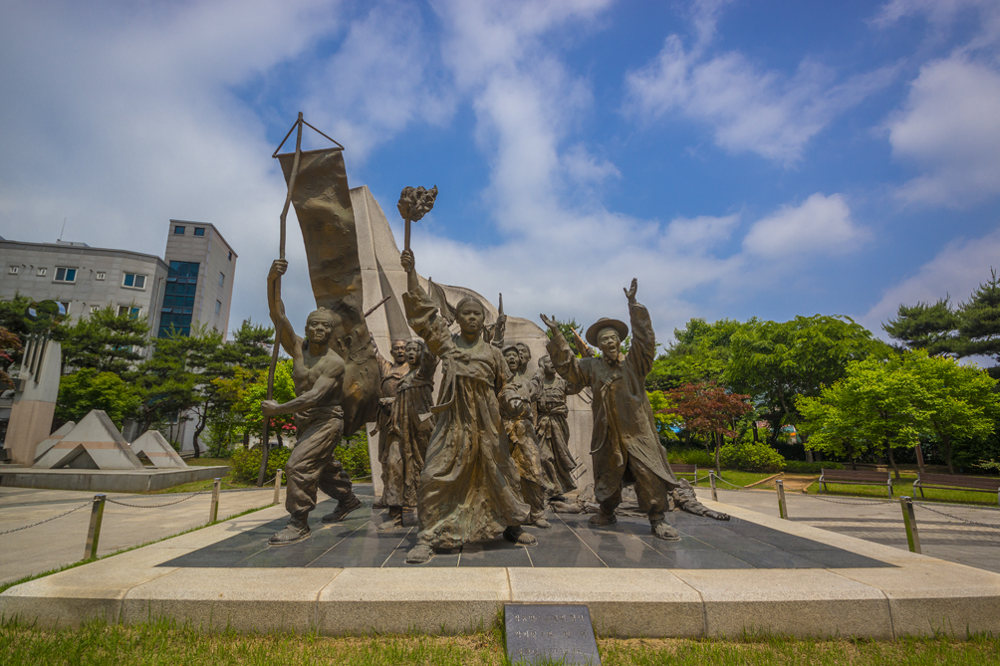
독립만세운동을 펼쳤던 아우내장터
날짜: 2023-02-12
천안시 병천면에 위치한 아우내장터는1919년 유관순 열사와 시위 군중이 독립만세운동을 펼쳤던 역사의 현장입니다.
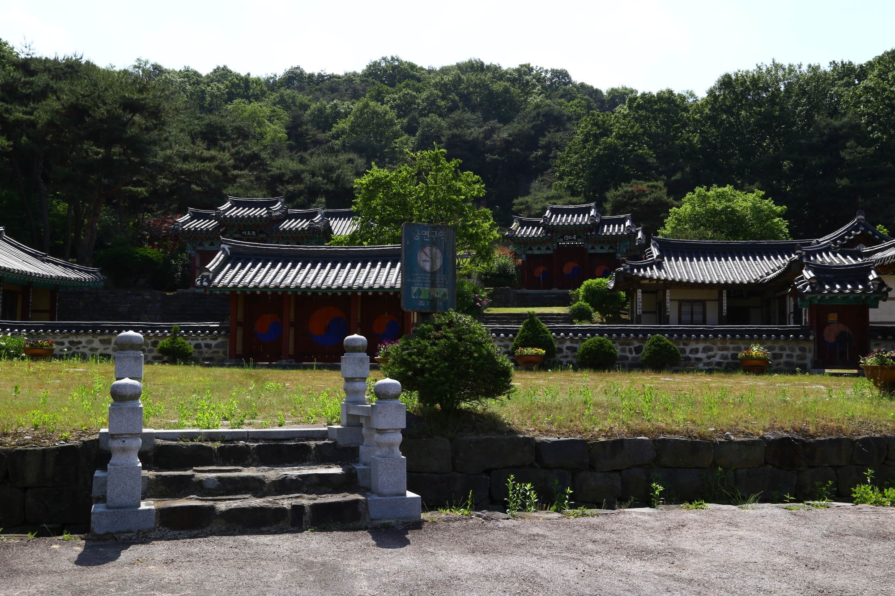
전씨시조단소와 검계서원 천안 문화재 여행
날짜: 2023-03-12
전씨시조단소는 전씨들의 고향으로 눈길을 끄는 곳으로 조상을 모시는 마음이 전해 지는 곳이다.

노란 물결 일렁이는 천흥지
날짜: 2023-04-12
성거산 중턱에 있는 만일사에는 법당 앞에 천흥사터 오층석탑보다 작은 오층석탑(충남 문화재자료 254)이 있다.
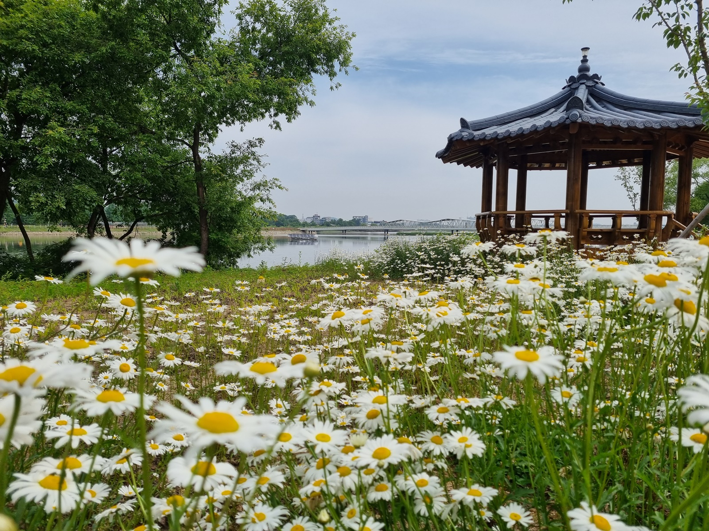
성성호수공원에서 꽃길 걷자고~~!
날짜: 2023-05-12
천안 8경 중 6경 성성호수공원은 어느덧 1주년을 맞이하였고, 수변에는 샤스테데이지와 장미꽃이 만발해 시민들이 찾아오는 도심 속 공원이 되었다.
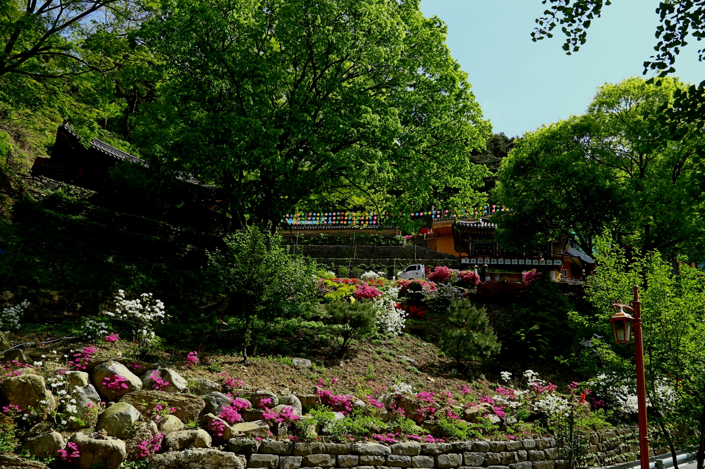
철쭉꽃이 화사하게 핀 천년고찰 태조산 성불사 느티나무 천안 여행
날짜: 2023-06-12
태조사는 느티나무와 함께 태조사 입구에 활짝 피어난 철쭉꽃이 반기는 사찰로 하얀색과 분홍색의 철쭉꽃이 눈길을 끈다.
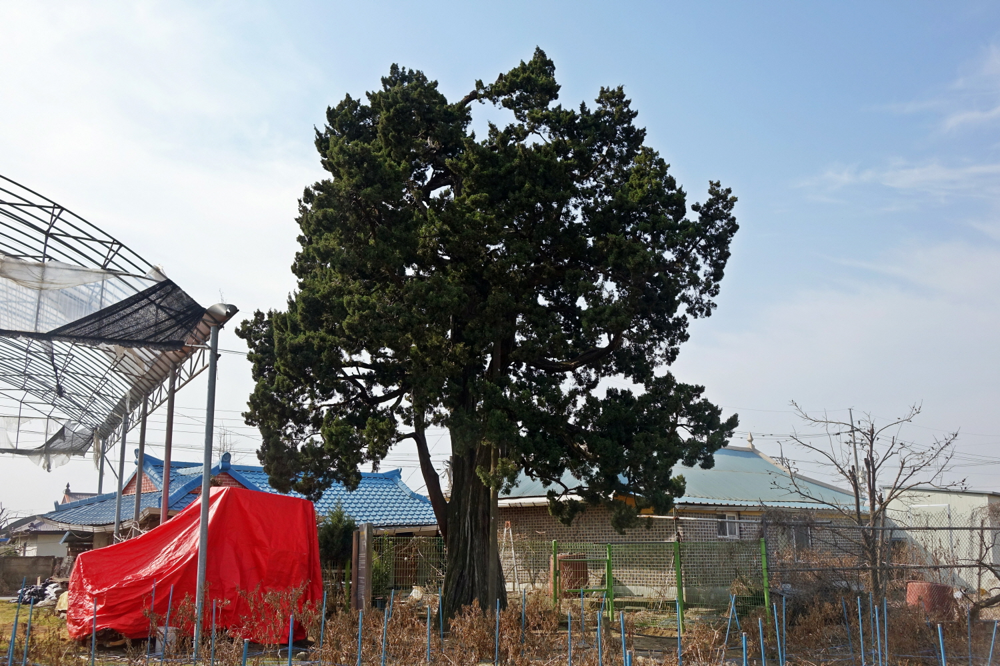
성환읍에서 만난 국보와 천연기념물
날짜: 2023-07-12
역사를 이야기를 하다 보면, 그 속에는 많은 사건과 인물, 유물과 유적, 동·식물 등이 가득하답니다.
관광지도 영역
행복의 도시, 천안을 한눈에
#유잼도시 천안
#당일치기
#가성비여행
인기
천안관광지1

추천
천안관광지2